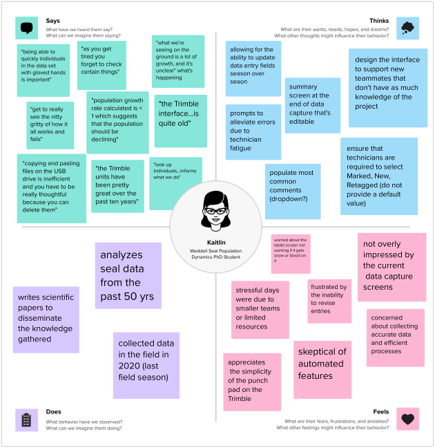
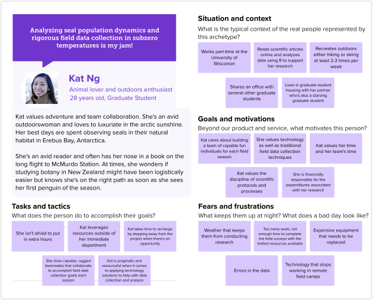
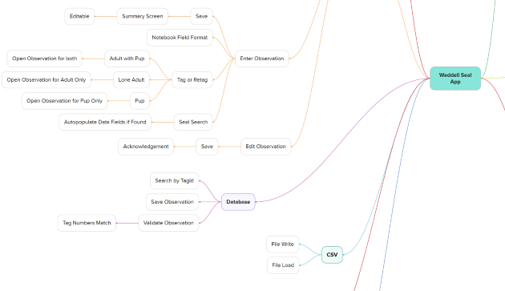
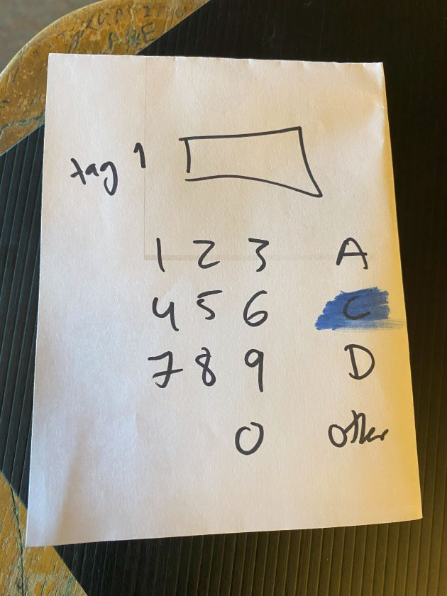
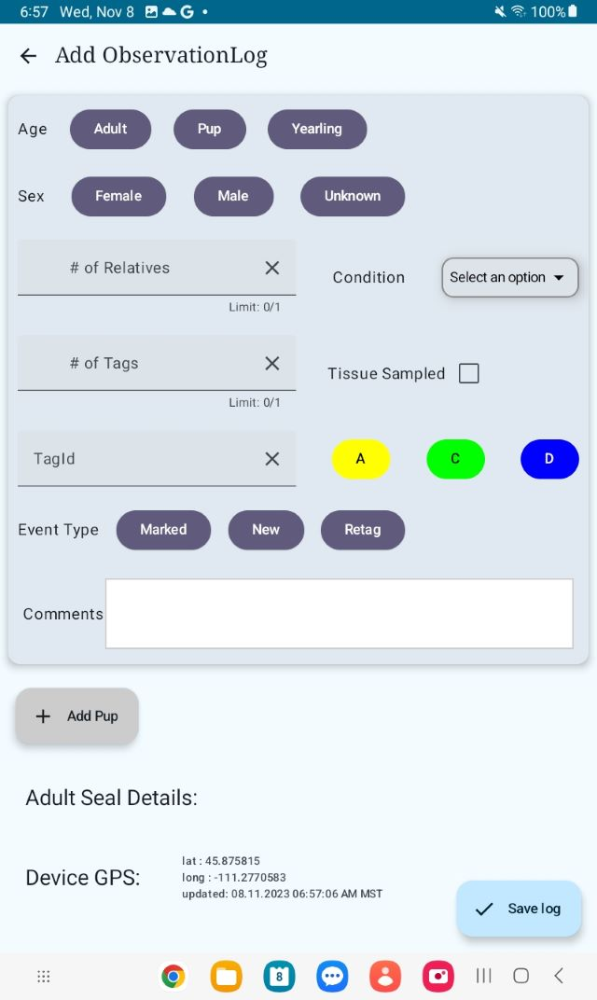
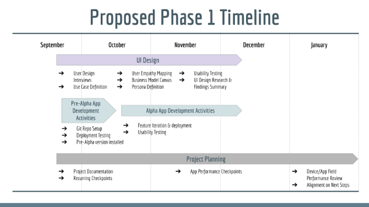

Weddell Seal App
Building a next-generation research app for Antarctic field work
The Weddell Seal population dynamics team needed a reliable, durable replacement for the device used to collect mark-recapture data during the Antarctic summer season. This project delivers an Android app for a ruggedized field tablet—designed with researchers and technicians, then tested where the work happens.
UX discovery and Android development ran in parallel. An alpha build was deployed and field-tested in Antarctica while the design stages below refined the experience.
Science context: Weddell Seal Science · MSU research overview
Visual project story (Adobe Express)
Background photo: Nate Jourdonnais in the field; photo by Parker Levinson, 11/2023
UX Discovery Stages
Stage 1 — Empathize
Research the users' needs
Five discovery interviews with lead researchers, the principal investigator, a former field technician, and a customer experience consultant set direction for the product.
Process outputs: Empathy maps (5) and use cases (3)
Key conclusions
- A next-generation Android tablet app can help field technicians gather data efficiently in Antarctica.
- Intuitive, low-friction views can reduce fatigue while protecting data accuracy.
- There was a clear near-term need: researchers wanted new technology ready for the upcoming field season.

Photo credit (stage imagery on Adobe story): Jesse DeVoe
Stage 2 — Define
State the users' needs and problems
Feature work centers on collecting demographic observations for Antarctic Weddell seal colonies.
Primary need: Efficient, accurate data collection on dependable, easy-to-use technology in harsh field conditions.
Problem: Aging devices were no longer reliable and were expensive to replace—risking continuity of a 50+ year dataset supported by NSF funding through the mid-2020s.
Process outputs: Persona and business model canvas
Key conclusions
- Data accuracy was a top priority across all interviewees.
- Dependability and ease of use surfaced repeatedly in empathy mapping.
- A lightly configurable product could serve research teams beyond the first audience.
- Commercial financial viability may be limited given typical research budgets—yet estimated technology cost savings for this team were substantial (~85% per field tech).

Photo credit (stage imagery on Adobe story): Jay Rotella, Quantarctica
Stage 3 — Ideate
Challenge assumptions and create ideas
How might we replace the current application—and improve it—so the software more closely matches how the team actually collects data in the field?
Process outputs: Mind map
Key conclusions
- Design for both experts and novices with clear labeling and organization.
- Use color, type, and flow choices that help mitigate fatigue during long field days.

Photo credit (related Adobe stage imagery): Parker Levinson
Stage 4 — Prototype
Create solutions
Whiteboarding and sketching with the lead researcher shaped low- and high-fidelity prototypes for the next generation of Weddell Seal research tooling. Usability heuristics and UX laws guided decisions as the Android UI took shape.
Process outputs: Low- and high-fidelity prototypes; documentation of usability heuristics and UX laws
Key conclusions
- Error recognition and recovery are essential to data integrity.
- Pre-populated fields support flexibility and efficiency under time pressure.
- Additional screens reduced cognitive load versus early, denser layouts.
- Larger tap targets (Fitts's Law) help in cold, gloved, windy conditions.


Photo credit (related Adobe stage imagery): Parker Levinson
Stage 5 — Test
Try out solutions in the field
Field testing began in mid-October with alpha releases roughly every two weeks. Formal evaluation at the end of November combined remote sessions with the Antarctic team and in-person work in Bozeman.
Features tested:
- Entering metadata on the home screen
- Navigating between screens
- Entering and saving an observation
- Exporting observations
Process outputs: Testing methodology, System Usability Scale (SUS) results, and statistical summaries (Python with pandas and matplotlib)
Key conclusions
- The app achieved a SUS score of 89 (average benchmark: 68).
- Direct feedback from Antarctica was strongly positive.
- Users asked for sensible customization options and offered concrete improvement ideas.
Photo credit: Nate Jourdonnais; photo by Parker Levinson, 11/2023
Stage 6 — Summarize
UI design summary and next steps
Stage 6 pulled the discovery work into a concise design summary: what the team learned, how the alpha performed in Antarctica, and where the product should go next. Presentation materials lived in shared working boards; the durable public narrative is captured on the Adobe Express project story linked above.
Takeaways
- Parallel UX and Android development made it possible to put an alpha in researchers' hands during the field season.
- Accuracy, dependability, and fatigue-aware interaction design remain the north stars.
- A configurable mark-recapture pattern may transfer to other field science teams—even when a broad commercial market is unlikely.

Photo credit (stage imagery on Adobe story): William Link